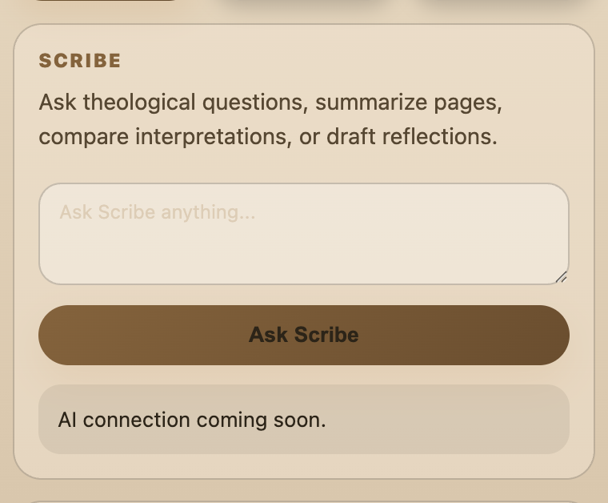
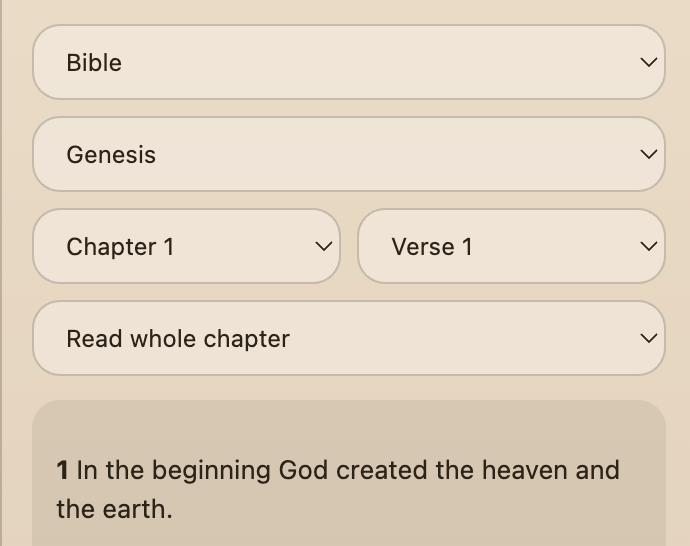
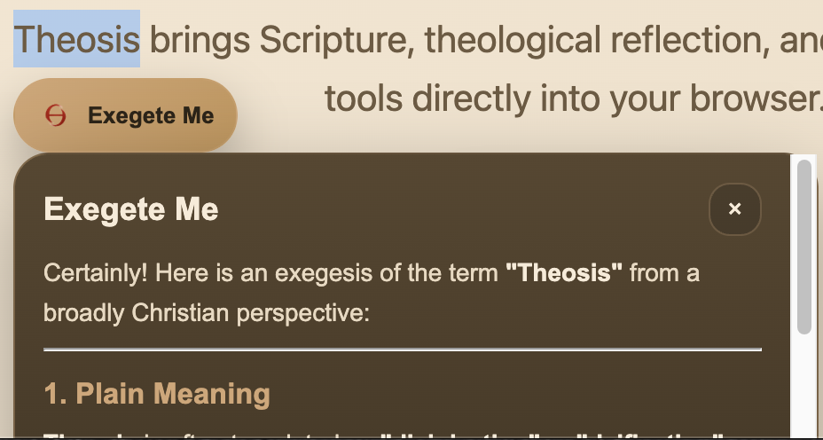

Scribe

Ask theological questions, compare traditions, and receive clear, faith-centered answers.
Software on Mission
The AI-powered Christian study companion for the modern web.
Theosis brings Scripture, theological reflection, and Christian study tools directly into your browser.
“Trusted by Christians exploring Scripture across traditions.”
Core Tools
Theosis is designed as a browser-native Christian study layer: ask, read, and interpret without leaving the page you are on.

Ask theological questions, compare traditions, and receive clear, faith-centered answers.

Read Scripture instantly with KJV chapter and verse lookup built directly into your browser.

Highlight any text on the web and receive historical, biblical, and ecumenical Christian commentary.
Mission
Theosis exists to help Christians study Scripture, understand theological claims, and bring faith-centered reflection into ordinary web use. The long-term vision is to build software that serves the Church and eventually supports Gospel-centered mission work with transparent stewardship.
Roadmap
More structured commentary, cross references, and tradition-aware explanations.
More translations, cleaner reading controls, and study workflows.
Future notes, highlights, bookmarks, and account-based continuity.
FAQ
Yes. Theosis is currently free to install from the Chrome Web Store.
Theosis aims to answer from a broadly Christian perspective while explaining differences between traditions fairly when they matter.
No. Theosis is a study aid, not a replacement for Scripture, prayer, church authority, pastoral care, or sacramental life.